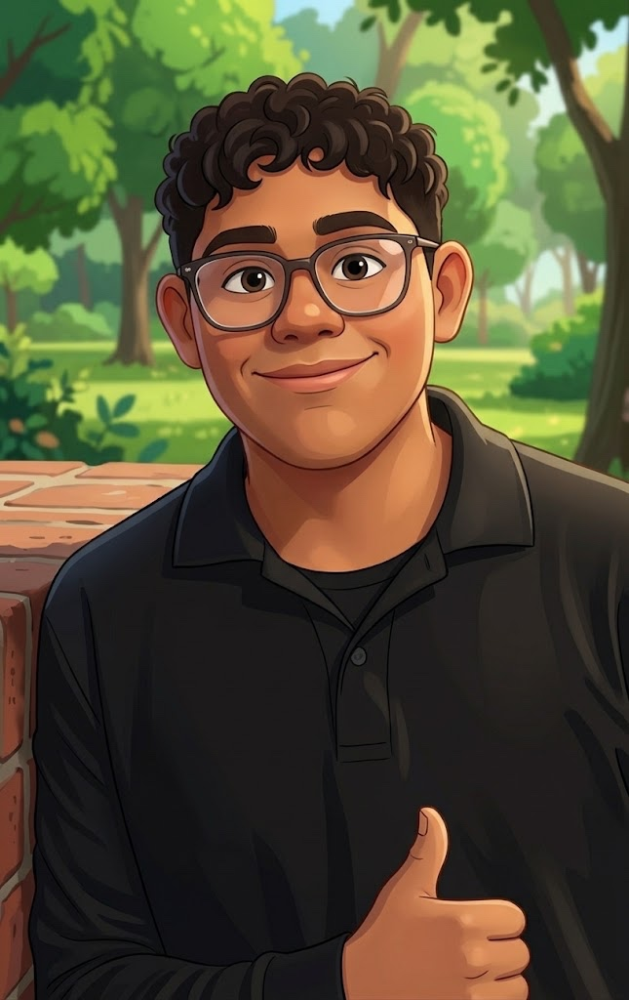

Como un perro y un humano pueden lograr todo juntos
Una noche, toda Aldrath se queda a oscuras. Las luces se apagan, los trenes se detienen y los robots guardianes quedan inmóviles. Nadie sabe por qué, nadie sabe cómo arreglarlo. Nadie, excepto una perrita de pelaje plateado con un chip antiguo en el collar.
Milech, un joven guerrero de quince años, y su fiel compañera Luna siguen un mapa holográfico que los lleva por el Bosque de Cables hasta la misteriosa Torre Circuito. Ahí los espera un campo de energía que bloquea la entrada, un robot que guarda un secreto y un reloj que corre: tienen hasta el amanecer.
¿Qué esconde la torre? ¿Por qué se apagó la ciudad? ¿Y qué tiene que ver el collar de Luna?
Milech y Luna: El Misterio del Núcleo Perdido.
Una aventura donde un perro y un humano demuestran que juntos pueden lograrlo todo.

Joven guerrero de quince años que cuida la ciudad de Aldrath. Es valiente, pensativo y tranquilo, y siempre piensa antes de actuar. Con su escudo de circuitos y su espada de energía protege a los habitantes, pero su mejor arma es su ingenio.
La perrita fiel de Milech. Es pequeña, juguetona y muy valiente, con un olfato increíble que descubre lo que nadie más ve. Lleva un chip antiguo en su collar, y ese chip guarda la clave del misterio.
En Aldrath, la ciudad donde las calles brillan y los robots nunca duermen, una noche todo se quedó en silencio. Esta es la historia de Milech, de su perrita Luna y del misterio que nadie más supo resolver.
Milech tenía quince años y un trabajo que le gustaba más que cualquier otro: cuidar Aldrath. Todas las noches recorría los puentes de luz con su escudo de circuitos en el brazo y su espada de energía en el cinturón. A su lado trotaba Luna, su perrita de pelaje plateado, con el collar de siempre y ese chip antiguo que nadie sabía de dónde venía.
Aquella noche, a las once en punto, las luces de la ciudad se apagaron. No parpadearon ni bajaron poco a poco, simplemente se apagaron. Los trenes se detuvieron en el aire, las pantallas quedaron negras y los robots guardianes se quedaron inmóviles, con los ojos sin luz, como estatuas.
—Tranquila, Luna —susurró Milech—. Vamos a ver qué pasó.
Luna no estaba asustada. Tenía la nariz pegada al suelo y olfateaba con insistencia una grieta entre dos baldosas. De pronto, del suelo salió una luz azul. Era un mapa holográfico que parpadeaba, con una línea brillante que cruzaba la ciudad, atravesaba un bosque y terminaba en una torre.
—Una señal secreta —dijo Milech—. Alguien quiere que la sigamos.
El mapa los llevó fuera de la ciudad, hasta un lugar que Milech conocía solo por las historias: el Bosque de Cables. Sus árboles eran altos y delgados, con luces en las ramas, y estaban unidos entre sí por cables brillantes que se movían como si respiraran. Esa noche las luces estaban casi apagadas y solo quedaba un resplandor débil.
Caminaron despacio. Milech esquivaba los cables que colgaban a la altura de su cara y Luna iba adelante, siguiendo el rastro del mapa. En un claro, un cable cruzaba el camino y chispeaba sin parar. Milech levantó su escudo y lo apoyó contra el cable. Los circuitos del escudo se encendieron en cian, absorbieron las chispas y el camino quedó libre.
—Gracias, escudo —dijo Milech, medio en broma.
Luna ladró dos veces. Entre los árboles se veía la silueta de una torre que apuntaba al cielo y que aún conservaba un poco de luz.
La Torre Circuito era más grande de lo que Milech había imaginado. Sus paredes estaban cubiertas de líneas de luz que parecían venas y, en lo más alto, una luz ámbar pulsaba muy despacio, como un corazón cansado.
En la entrada los esperaba un robot viejo, de metal gris y manchas de óxido, con ojos cian que se encendieron cuando los vio.
—Soy Zeta, guardián de la Torre —dijo con voz crujiente—. Llevo mucho tiempo esperando que alguien siguiera la señal. Ustedes la entendieron.
—¿Qué está pasando, Zeta? —preguntó Milech.
—Dentro de la torre está el Núcleo, que da energía a toda Aldrath. Funciona sin descanso desde hace cientos de años y nadie lo ha revisado nunca. Está agotado. No quiere dejar a la ciudad a oscuras, pero no tiene otra manera de avisar.
Zeta señaló la puerta. Un campo de energía violeta y ámbar la cubría de arriba abajo y vibraba con un zumbido grave.
—Ese campo protege el Núcleo, y solo se apaga si alguien encuentra la pista escondida en la entrada. Yo no puedo decirles dónde está, porque así me programaron. Pero tienen hasta el amanecer. Cuando salga el sol, el Núcleo se apagará del todo.
Milech miró el cielo. Al este, el negro empezaba a volverse azul oscuro. Tenía poco tiempo.
Milech probó todo lo que se le ocurrió. Tocó el campo con la espada de energía, pero la luz solo se hizo más brillante. Golpeó el suelo con el escudo, revisó las paredes y movió piedras. El campo seguía igual y el cielo ya estaba más claro.
—No lo logro —dijo al fin, sentándose en el suelo—. No sé dónde buscar.
Luna se le acercó, le apoyó la cabeza en la rodilla y lo miró un momento. Después se levantó, bajó la nariz y empezó a olfatear la entrada, primero la puerta y después las paredes, con paso lento y seguro. Se detuvo junto a una placa de metal que parecía igual a todas las demás y la rascó con la pata.
Milech corrió a ayudarla. Bajo la placa había un puerto pequeño con un hueco del tamaño exacto de un chip.
Miró el collar de Luna y luego miró el hueco. Luna ya estaba ahí, inmóvil, esperando.
—Ese chip... —murmuró Milech—. Siempre fue una llave.
Con cuidado, Milech soltó el collar y encajó el chip en el puerto. Hubo un clic suave. El campo de energía se desvaneció y la puerta se abrió.
Dentro de la torre, el Núcleo flotaba en el centro de la sala. Era una esfera de luz ámbar muy débil, como una vela a punto de apagarse. Cuando Luna se acercó, el chip del collar brilló, el Núcleo respondió y la luz empezó a crecer. Subió por las líneas de la torre y recorrió el Bosque de Cables, y las luces de los árboles se encendieron una a una. En Aldrath volvieron a brillar las calles, los trenes arrancaron y los ojos de los robots guardianes se iluminaron.
Justo entonces, el sol asomó sobre el horizonte.
—Llegaron a tiempo —dijo Zeta, con la voz más suave—. Ahora ya puedo contarles todo. El apagón no fue un ataque ni un error. El Núcleo estaba pidiendo ayuda y esa fue la única forma que encontró. Necesitaba que alguien lo escuchara.
Milech se quedó un momento en silencio. Después puso la mano sobre la esfera, que ya brillaba tranquila y cálida.
—Te escuchamos —dijo—. Prometo que a partir de hoy cuidaremos de ti, igual que cuidamos la ciudad.
Luna ladró, feliz. Zeta inclinó la cabeza y sus ojos brillaron con orgullo. Afuera, el amanecer pintaba Aldrath de dorado.
Y así, el guerrero y su perrita descubrieron que a veces lo más importante no es pelear, sino saber escuchar.
Fin